This section explains how you can debug your Python for Capella script. The debug mode allows you to execute your script step by step and see the value of each variables.
It can help you find and fix bugs from your scripts.
You will need to enable Development capabilities if it’s not already done.
To add a breakpoint, you can double click on the left ruler of the Python editor. This will add a breakpoint on the selected instruction.
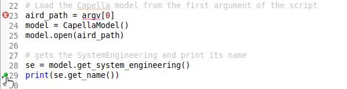
You can now select your script and right click on it:
- select the Debug As / EASE Script menu
If your script takes some arguments, you can change the launch configuration by right clicking on your script:
- select the Debug As / Debug configuration.
This will open the launch configuration for your script and you can edit it to add parameters for instance.
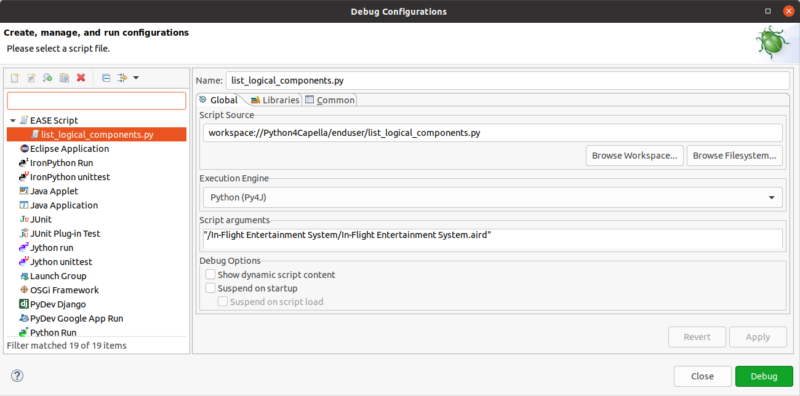
If you have errors launching your script in debug mode you can try to change the execution engine to “Python (Jython Debugger)”.
When the debugger stops on the breakpoint, you will be prompted to change the perspective to the debug perspective.
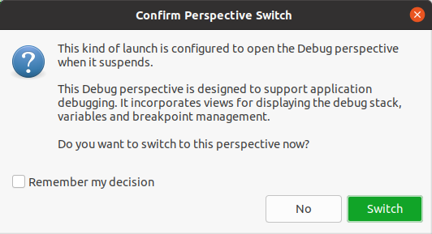
You can then click the switch button.
This perspective will allow to control the debugger and see the internal state of your script.
To step over/into/return you can use the tool bar at the top:
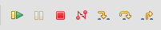
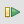
Executes all instructions until the next breakpoint
Suspends the execution on the current instruction
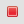
Stops the debugger
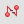
Disconnects the debugger
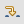
Steps into the code of the called function
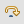
Executes the next instruction
Steps to the instruction that called the current function
When the execution is suspended you can check the value of variables in the variables view:
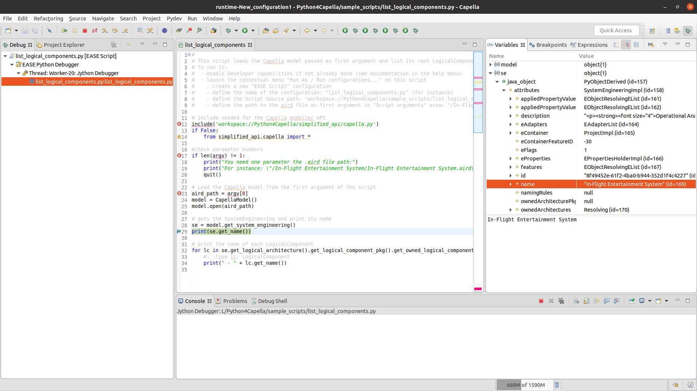
You can use the breakpoints view to remove or edit breakpoints:
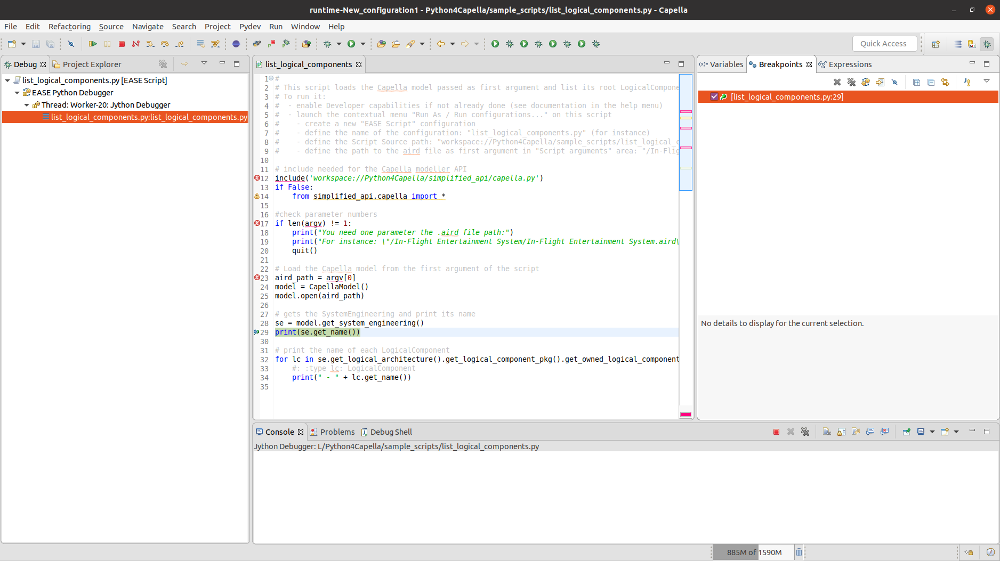